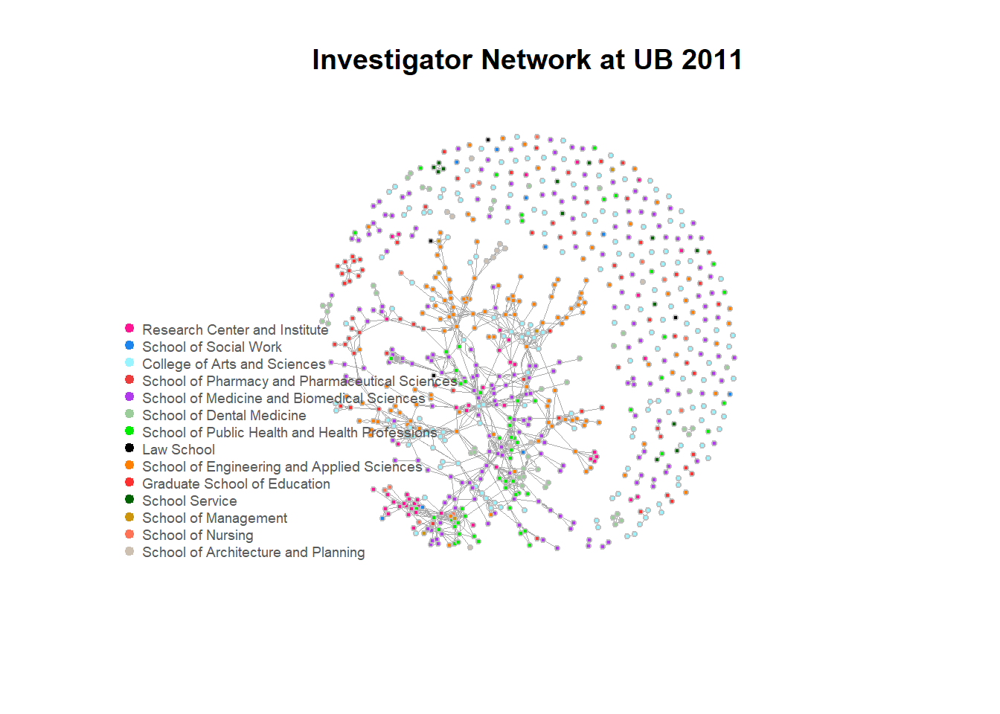

Investigator Networks at UB
Explore the scientific collaborations at UB
Yujia Pan
Introduction
At UB, professors are awesome and they get a LOT of grants every year! But.. How do they collborate and who write proposals together?
Problem Statement:
Today Scientific collaboration is already common within and among a large number of disciplines [@Newman2001]. One of the most widely discussed forms of scientific collaborations using social network analysis is co-authorship. Besides co-authorship, co-investigation that happens when investigators work on and submit a proposal together, is another form of scientific collaboration. Its importance is no less than the widely studied co-authorship. However, unlike co-authorship, little is studied about co-investigation relationships because information about proposal submission is not commonly available.- Study Objectives:
- Reveal the topological structures of investigator networks at UB between fiscal year 2011 and 2015.
- Investigate the temporal characteristics of these networks and how they evolve over time.
- Significance:
- A better understanding of scientific collaborations.
- Promote proposal writing at UB.
Materials and Methods
Data
Data used in this project was acquired from UB Sponsored Projects Services (SPS) with the help of my advisor, Dr. Ling Bian. A total of 7,714 proposals submitted from UB between the fiscal year 2011 and 2015 involving 1,446 investigators are included in a series of spreadsheets.
library(RCurl)
library(knitr)
library(igraph)
library(dplyr)dept_2011 <- getURL("https://raw.githubusercontent.com/LittlePennyPaw/Data/master/Dept_2011.csv",
ssl.verifyhost = FALSE, ssl.verifypeer = FALSE)
dept2011_frame <- read.csv(textConnection(dept_2011), header = T)
knitr::kable(head(dept2011_frame), caption = "Example of Department Table")| ID | Department | School |
|---|---|---|
| RIA24 | Research Institute on Addictions | Research Center and Institute |
| SSW13 | School of Social Work | School of Social Work |
| RIA16 | Research Institute on Addictions | Research Center and Institute |
| PSY17 | Psychology | College of Arts and Sciences |
| PHS08 | Pharmaceutical Sciences | School of Pharmacy and Pharmaceutical Sciences |
| PT09 | Pharmacology & Toxicology | School of Medicine and Biomedical Sciences |
corp <- getURL("https://raw.githubusercontent.com/LittlePennyPaw/Data/master/Data_Corp.csv",
ssl.verifyhost = FALSE, ssl.verifypeer = FALSE)
corp_frame <- read.csv(textConnection(corp), header = T)
knitr::kable(head(corp_frame), caption = "Example of Corporate Proposal Table")| ID1 | ID2 | PID | Awarded | Year |
|---|---|---|---|---|
| RIA24 | SSW13 | 11010008 | NO | 2011 |
| RIA24 | RIA26 | 11010008 | NO | 2011 |
| SSW13 | RIA26 | 11010008 | NO | 2011 |
| RIA24 | RIA16 | 11010009 | NO | 2011 |
| RIA24 | RIA17 | 11010009 | NO | 2011 |
| RIA16 | RIA17 | 11010009 | NO | 2011 |
single <- getURL("https://raw.githubusercontent.com/LittlePennyPaw/Data/master/Data_SIngle.csv",
ssl.verifyhost = FALSE, ssl.verifypeer = FALSE)
single_frame <- read.csv(textConnection(single), header = T)
knitr::kable(head(single_frame), caption = "Example of Single Proposal Table")| ID | PID | Awarded | Year |
|---|---|---|---|
| STEP02 | 11010051 | YES | 2011 |
| SNG17 | 11010074 | YES | 2011 |
| FMM08 | 11010087 | YES | 2011 |
| BIO19 | 11010094 | NO | 2011 |
| BCH18 | 11010096 | NO | 2011 |
| CHE23 | 11010100 | NO | 2011 |
Methodology
corp2011<-filter(corp_frame,Year == "2011")
single2011<-filter(single_frame,Year == "2011")
corp.network1<-graph.data.frame(corp2011, vertice = dept2011_frame,directed=F)
V(corp.network1)$color <- V(corp.network1)$School
color_matrix <- matrix(c("deeppink1","dodgerblue2","cadetblue1",
"brown2","darkorchid2","darkseagreen3",
"green2","gray0","darkorange1",
"firebrick1","darkgreen","darkgoldenrod3",
"coral1","antiquewhite3"))
school_matrix <- matrix(nrow=14)
for (i in 1:14){
V(corp.network1)$color <- gsub( unique(dept2011_frame$School)[i],color_matrix[i],V(corp.network1)$color)
school_matrix[i]<-toString(unique(dept2011_frame$School)[i])
}
plot(corp.network1, vertex.size=3, vertex.frame.color="Gray",
edge.width = 0.7, isolates = single2011,
layout= layout_nicely(corp.network1), main= "Investigator Network at UB 2011", vertex.label = NA)
legend("bottomleft", school_matrix, pch=20,
col=color_matrix, pt.cex=1.3, cex=0.6, bty="n", ncol=1, text.col= "gray35")
 Licensed under CC BY-SA 3.0 via Wikimedia Commons
Licensed under CC BY-SA 3.0 via Wikimedia Commons
{kind=link}
Results
Show tables, plots, etc. and describe them.
Conclusions
What have you learned? Are there any broader implications?